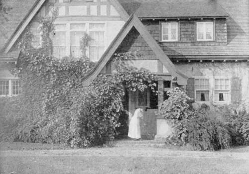

Chapter X. On The Drapery Of Cottages And Gardens
Description
This section is from the book "Landscape Gardening", by Andrew Jackson Downing. Also available from Amazon: Landscape Gardening.
Chapter X. On The Drapery Of Cottages And Gardens
OUR readers very well know that, in the country, whenever any thing especially tasteful is to be done, when a church is to be "dressed for Christmas," a public hall festooned for a fair, or a salon decorated for a horticultural show, we have to entreat the assistance of the fairer half of humanity. All that is most graceful and charming in this way owes its existence to female hands. Over the heavy exterior of man's handiwork they weave a fairy-like web of enchantment, which, like our Indian summer haze upon autumn hills, spiritualizes and makes poetical whatever of rude form or rough outlines may lie beneath.
Knowing all this, as we well do, we write this essay especially for the eyes of the ladies. They are naturally mistresses of the art of embellishment. Men are so stupid, in the main, about these matters, that, if the majority of them had their own way, there would neither be a ringlet, nor a ruffle, a wreath, nor a nosegay left in the world. All would be as stiff and as meaningless as their own meagre black coats, without an atom of the graceful or romantic about them; nothing to awaken a spark of interest or stir a chord of feeling; nothing, in short, but downright, commonplace matter-of-fact. And they undertake to defend it — the logicians — on the ground of utility and the spirit of the age! As if trees did not bear lovely blossoms as well as good fruit; as if the sun did not give us rainbows as well as light and warmth; as if there were not still mockingbirds and nightingales as well as ducks and turkeys.
But enough of that. You do not need any arguments to prove that grace is a quality as positive as electro-magnetism. Would that you could span the world with it as quickly as Mr. Morse with his telegraph. To come to the point, we want to talk a little with you about what we call the drapery of cottages and gardens; about those beautiful vines, and climbers, and creepers, which nature made on purpose to cover up every thing ugly, and to heighten the charm of every thing pretty and picturesque. In short, we want your aid and assistance in dressing, embellishing, and decorating, not for a single holiday, fair, or festival, but for years and for ever, the outsides of our simple cottages and country homes; wreathing them about with such perennial festoons of verdure, and starring them over with such bouquets of delicious odor, that your husbands and brothers would no more think of giving up such houses, than they would of abandoning you (as that beggarly Greek, Theseus, did the lovely Ariadne) to the misery of solitude on a desolate island.
* Original date of February, 1849.
Fig. 31. Vine-Draped Cottage.
And what a difference a little of this kind of rural drapery, tastefully arranged, makes in the aspect of a cottage or farm house in the country! At the end of the village, for instance, is that old-fashioned stone house, which was the homestead of Tim Steady. First and last, that family lived there two generations; and every thing about them had a look of some comfort. But with the exception of a coat of paint, which the house got once in ten years, nothing was ever done to give the place the least appearance of taste. An old, half decayed ash tree stood near the south door, and a few decrepit and wornout apple trees behind the house. But there was not a lilac bush, nor a syringa, not a rose bush nor a honeysuckle about the whole premises. You would never suppose that a spark of affection for nature, or a gleam of feeling for grace or beauty, in any shape, ever dawned within or around the house.
Well, five years ago the place was put up for sale. There were some things to recommend it. There was a "good well of water;" the house was in excellent repair; and the location was not a bad one. But, though many went to see it, and "liked the place tolerably well," yet there seemed to be a want of heart about it, that made it unattractive, and prevented people from buying it.
It was a good while in the market; but at last it fell into the hands of the Widow Winning and her two daughters. They bought it at a bargain, and must have foreseen its capabilities.
What that house and place is now, it would do your heart good to see. A porch of rustic trellis-work was built over the front doorway, simple and pretty hoods upon brackets over the windows, the dooryard was all laid out afresh, the wornout apple trees were dug up, a nice bit of lawn made around the house, and pleasant groups of shrubbery (mixed with two or three graceful elms) planted about it. But, most of all, what fixes the attention, is the lovely profusion of flowering vines that enrich the old house, and transform what was a soulless habitation, into a home that captivates all eyes. Even the old and almost leafless ash tree is almost overrun with a creeper, which is stuck full of gay trumpets all summer, that seem to blow many a strain of gladness to the passers by. How many sorts of honeysuckle, clematises, roses, etc., there are on wall or trellis about that cottage, is more than we can tell. Certain it is, however, that half the village walks past that house of a summer night, and inwardly thanks the fair inmates for the fragrance that steals through the air in its neighborhood: and no less certain is it that this house is now the "admired of all admirers," and that the Widow Winning has twice refused double the sum it went begging at when it was only the plain and meagre home of Tim Steady.
Many of you in the country, as we well know, are compelled by circumstances to live in houses which some one else built, or which have, by ill-luck, an ugly expression in every board or block of stone, from the sill of the door to the peak of the roof. Paint won't hide it, nor cleanliness disguise it, however goodly and agreeable things they are. But vines will do both; or, what is better, they will, with their lovely, graceful shapes, and rich foliage and flowers, give a new character to the whole exterior. However ugly the wall, however bald the architecture, only give it this fair drapery of leaf and blossom, and nature will touch it at once with something of grace and beauty.
Continue to:
- prev: Chapter IX. The Beautiful In A Tree
- Table of Contents
- next: On The Drapery Of Cottages And Gardens. Part 2